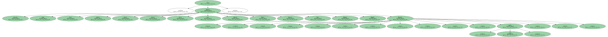
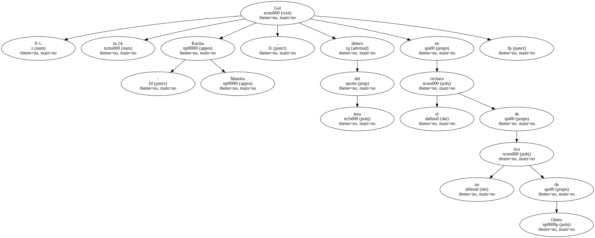
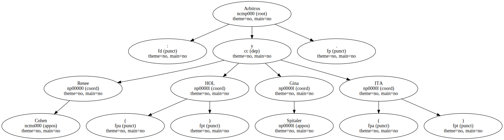
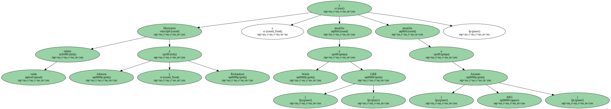
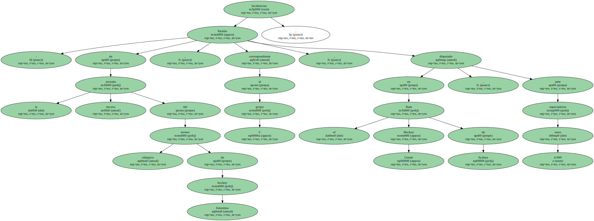
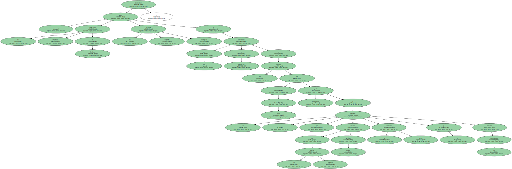
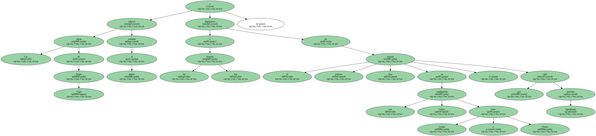
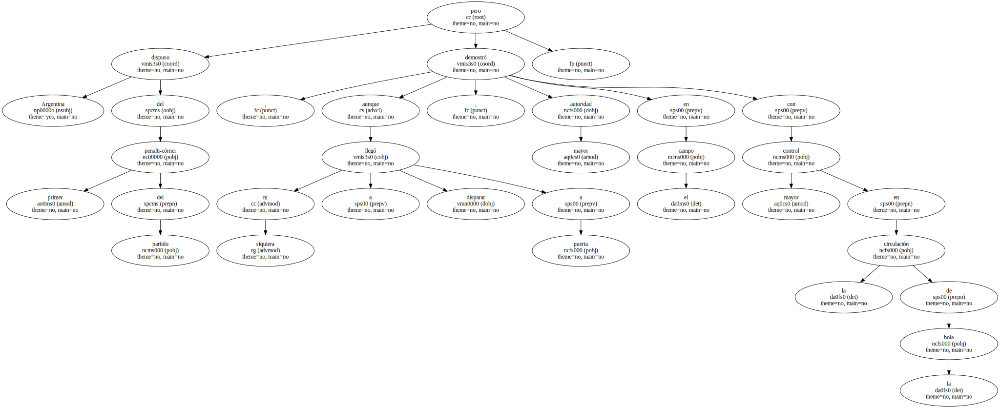
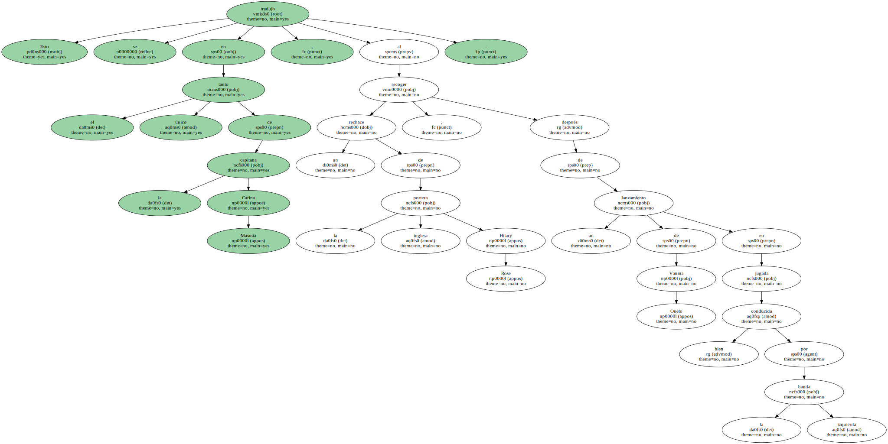

0 - Gran Bretaña : Rose ; Bowden , Smith , Clewlow , Cullen , Johnson , Sixmith , Simpson , Richardson , Stott , Walsh - equipo inicial - Wright , Marston , Greenham , Nicholson.

1 - Argentina : Antoniska ; Aicega , Ferrari , Gambero , Stepnik , Arrondo , Aymar , Oneto , Rimoldi , Masotta , Rognoni - equipo inicial - García , Maiztegui , Margalot , Hernández.
Gol : 0-1, m.14: Karina Masotta , dentro del área en el rechace de un tiro de Oneto.
Arbitros : Renee Cohen ( HOL ) y Gina Spitaler ( ITA ).
Mostraron tarjeta verde a Johnson y Richardson y amarilla a Walsh ( GBR ) y amarilla a Arrondo ( ARG ).
Incidencias : Partido de la tercera jornada del torneo olímpico de hockey femenino , correspondiente al grupo C , disputado en el State Hockey Center de Sydney , ante unos 4.000 espectadores.
Comentario : La selección argentina de hockey sumó su segunda victoria olímpica al imponerse por 1-0 a Inglaterra en un partido en el que fue claramente superior a las inglesas , que en la segunda mitad crearon cierto peligro , se cerraron mejor y buscaron el contragolpe.
Las chicas de Sergio Vigil salieron volcadas al ataque y a los tres minutos dispusieron de la primera ocasión clara en una buena combinación entre Aymar y Onetto , que salió ligeramente desviada.
Argentina dispuso del primer penalti-córner del partido pero , aunque ni siquiera llegó a disparar a puerta , demostró mayor autoridad en el campo con mayor control en la circulación de la bola.
Esto se tradujo en el único tanto de la capitana Carina Masotta , al recoger un rechace de la portera inglesa Hilary Rose , después de un lanzamiento de Vanina Oneto en jugada bien conducida por la banda izquierda.
